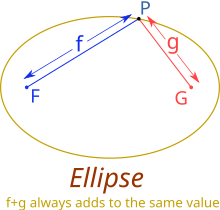
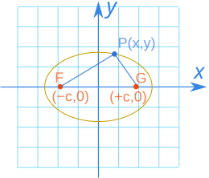
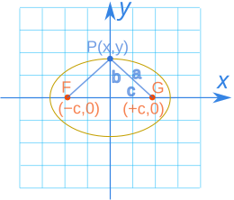
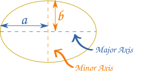
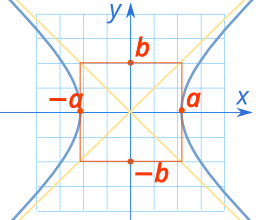

Ellipse Formula Derivation
An ellipse usually looks like a squashed circle:
"F" is a focus, "G" is a focus,
and together they are called foci.
(pronounced "fo-sigh")

The total distance from F to P to G stays the same
In other words, we always travel the same distance when going from:
- point "F" to
- to any point on the ellipse
- and then on to point "G"
Definition
An ellipse is the set of all points on a plane whose distance from two fixed points F and G add up to a constant.

Foci on a Graph
An ellipse is defined by its two foci (focus points).
Let's put them on a graph!
Let's place the two foci on the x-axis at:
F = (−c, 0) and G = (c, 0)
For any point P(x, y) on the ellipse, the definition says:
Distance(F, P) + Distance(G, P) = 2a
Using the distance formula on P(x,y), we can write this as:
√(x + c)2 + y2 + √(x − c)2 + y2 = 2a
Let's solve!

Almost there! Now let's define a new variable b where:
a2 = b2 + c2
Pythagorean Theorem
So:
b2 = a2 − c2
We can substitute (a2 − c2) with b2 in our equation:
To make it more useful, divide every term by a2b2 to get:
Try the sliders here:

a is the semi-major axis (the distance from the exact center (0,0) to the far tip on the x-axis).
b is the semi-minor axis (the distance from the center (0,0) to the very top point on the y-axis).
Hyperbola

The formula for the equation of the hyperbola is very similar:
Except for "−" instead of "+".
We can follow a similar route to derive its formula, too.